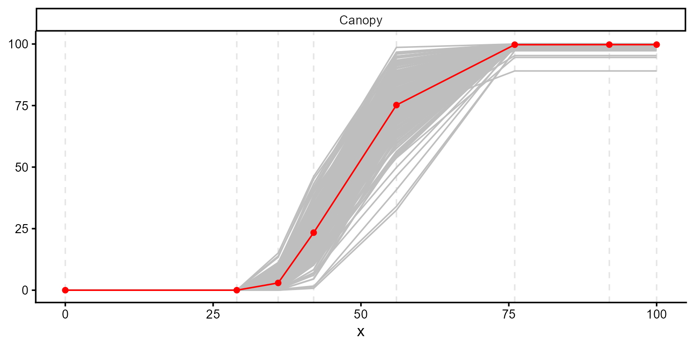
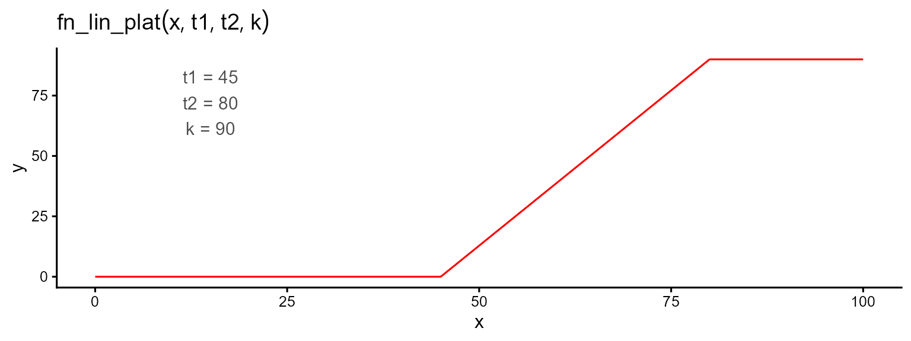
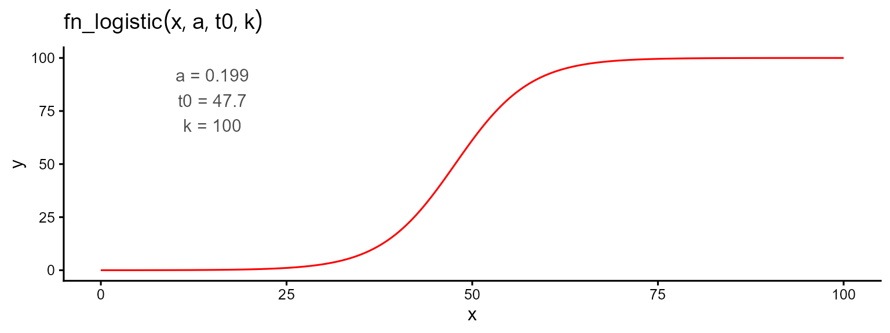
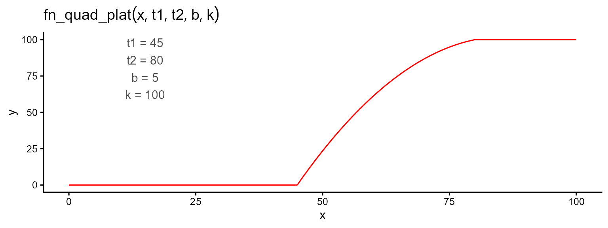
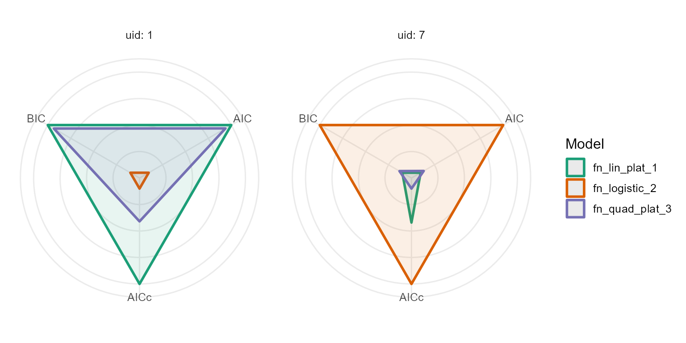
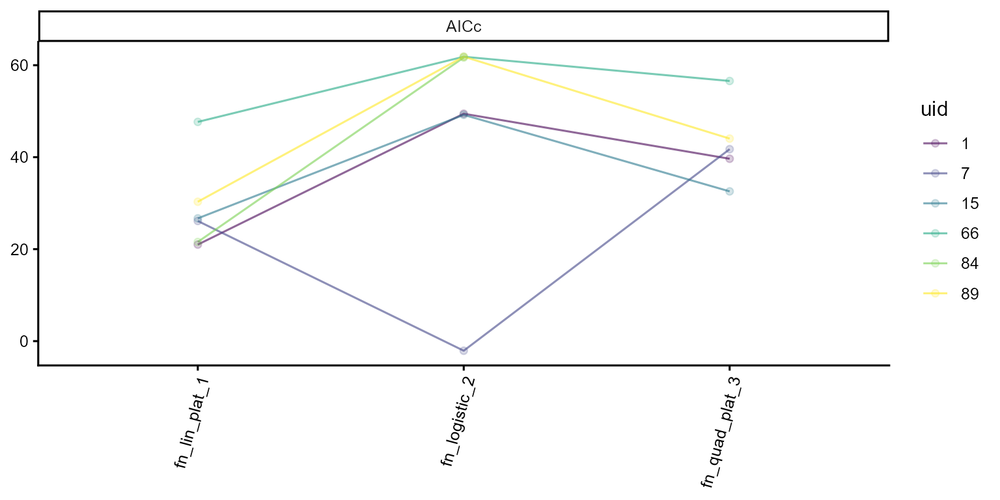
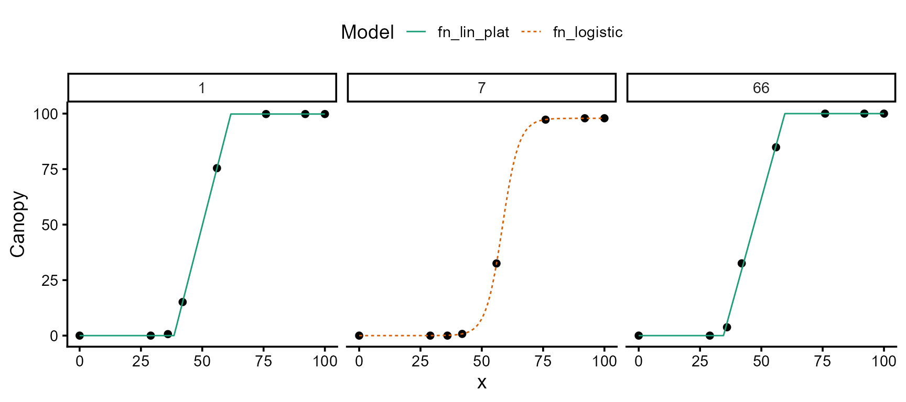

Choosing a different model for every plot
Canopy development can vary considerably among plots. Some follow an approximately linear pattern, whereas others show a more sigmoidal response. As a result, a single functional form may describe some plots well but provide a poor fit for others.
The model_selection() function allows a different model
to be selected for each plot. Candidate models are fitted to the same
data, and the best-fitting model is selected according to a specified
criterion. The results are returned as a single modeler
object containing the selected fit for each plot.
We use canopy cover data derived from UAV imagery collected by the University of Wisconsin–Madison Potato Breeding Program. The dataset includes eight flights conducted between 0 and 100 days after planting (DAP).
1. Exploring data
plot(explorer, type = "evolution", add_avg = TRUE)
Canopy cover increases rapidly between approximately 30 and 60 DAP, before approaching a plateau near 100%. The individual trajectories show some variation in the timing and shape of this increase.
2. Candidate models
We consider three models: linear-plateau, logistic, and quadratic-plateau. Each describes an increase in canopy cover toward a maximum value, but they differ in how they represent the growth phase and the transition to the plateau.
Linear-plateau — This three-parameter model describes a linear increase in canopy cover from (\(t_1\)) to (\(t_2\)), followed by a constant plateau at (\(k\)):
\[\begin{equation} f(t; t_1, t_2, k) = \begin{cases} 0 & \text{if } t < t_1 \\ \dfrac{k}{t_2 - t_1} \cdot (t - t_1) & \text{if } t_1 \leq t \leq t_2 \\ k & \text{if } t > t_2 \end{cases} \end{equation}\]
Logistic — This three-parameter model describes sigmoidal growth, with a gradual increase followed by a slowdown as canopy cover approaches the asymptote (\(k\)). The parameter (\(t_0\)) represents the inflection point, and (\(a\)) controls the growth rate:
\[\begin{equation} f(t; a, t_0, k) = \dfrac{k}{1 + e^{-a (t - t_0)}} \end{equation}\]
Quadratic-plateau — This four-parameter model describes a quadratic increase in canopy cover from (\(t_1\)) to (\(t_2\)), followed by a constant plateau at (\(k\)). The parameter (\(b\)) represents the initial slope of the growth phase.:
\[\begin{equation} f(t; t_1, t_2, b, k) = \begin{cases} 0 & \text{if } t < t_1 \\ b (t - t_1) + \dfrac{k - b (t_2 - t_1)}{(t_2 - t_1)^2} (t - t_1)^2 & \text{if } t_1 \leq t \leq t_2 \\ k & \text{if } t > t_2 \end{cases} \end{equation}\]
We use plot_fn() to visualize each model with the
starting parameter values that will be used for fitting:



3. Fitting the candidates
For this example, we fit the three models to a subset of six plots.
The subset argument can be omitted to fit the models to the
entire trial.
ids <- c(1, 7, 15, 66, 84, 89)
mod_1 <- dt_potato |>
modeler(
x = DAP,
y = Canopy,
grp = Plot,
fn = "fn_lin_plat",
parameters = c(t1 = 45, t2 = 80, k = 90),
subset = ids
)
mod_2 <- dt_potato |>
modeler(
x = DAP,
y = Canopy,
grp = Plot,
fn = "fn_logistic",
parameters = c(a = 0.199, t0 = 47.7, k = 100),
subset = ids
)
mod_3 <- dt_potato |>
modeler(
x = DAP,
y = Canopy,
grp = Plot,
fn = "fn_quad_plat",
parameters = c(t1 = 45, t2 = 80, b = 1, k = 100),
subset = ids
)4. Comparing by hand with performance()
We use performance() to compare the candidate models
using AIC, AICc, and BIC in this example.
comparison <- performance(mod_1, mod_2, mod_3, metrics = c("AIC", "AICc", "BIC"))
comparison |>
filter(uid %in% c(1, 7)) |>
kable(caption = "Information criteria for the first two plots")| fn_name | uid | df | nobs | p | AIC | AICc | BIC |
|---|---|---|---|---|---|---|---|
| fn_lin_plat_1 | 1 | 4 | 8 | 3 | 7.66 | 20.99 | 7.98 |
| fn_logistic_2 | 1 | 4 | 8 | 3 | 36.12 | 49.45 | 36.43 |
| fn_quad_plat_3 | 1 | 5 | 8 | 4 | 9.66 | 39.66 | 10.06 |
| fn_lin_plat_1 | 7 | 4 | 8 | 3 | 12.79 | 26.13 | 13.11 |
| fn_logistic_2 | 7 | 4 | 8 | 3 | -15.42 | -2.09 | -15.10 |
| fn_quad_plat_3 | 7 | 5 | 8 | 4 | 11.74 | 41.74 | 12.14 |
The quadratic-plateau model has four curve parameters, compared with three for the linear-plateau and logistic models. Including the residual variance, the corresponding parameter counts used for AIC and AICc are five and four, respectively. With only eight observations per plot, the small-sample correction in AICc is substantial: it adds 30 to the AIC of the quadratic-plateau model and 13.3 to the other two models. As a result, AICc may favor a simpler model even when the more complex model has a lower AIC.
The radar plot rescales every metric within a plot, so the outer edge is always the best model:

Comparing models individually becomes impractical when the number of
plots is large. The model_selection() function automates
this process.
5. Automatic selection
The fitted models are supplied along with the selection criterion, which in this example is “AICc”.
best <- model_selection(mod_1, mod_2, mod_3, metrics = "AICc")
#> Warning: No usable metric for 1 group(s): 84. They are not present in the
#> output.
best
#>
#> Call:
#> Canopy ~ fn_lin_plat(DAP, t1, t2, k) | uid (4)
#> Canopy ~ fn_logistic(DAP, a, t0, k) | uid (1)
#>
#> Residuals (`Standardized`):
#> Min. 1st Qu. Median Mean 3rd Qu. Max.
#> -1.923e+00 -1.225e-05 0.000e+00 1.851e-02 1.000e-08 2.236e+00
#>
#> Optimization Results `head()`:
#> uid coefficient solution std.error t value Pr(>|t|)
#> 1 t1 38.492 0.08871 433.9 1.23e-12
#> 1 t2 61.661 0.10929 564.2 3.32e-13
#> 1 k 99.811 0.17299 577.0 2.97e-13
#> 7 a 0.294 0.00495 59.4 2.57e-08
#>
#> Metrics:
#> Groups Timing Convergence Iterations
#> 5 2.9006 100% 458.8 (id)The function returns a single modeler object containing
the selected fit for each plot. attr(best, "selection")
records which model was selected for each plot, along with its selection
score.
| uid | fn_name | score | n_metrics | model | order |
|---|---|---|---|---|---|
| 1 | fn_lin_plat_1 | 1 | 1 | fn_lin_plat | 1 |
| 7 | fn_logistic_2 | 1 | 1 | fn_logistic | 2 |
| 15 | fn_lin_plat_1 | 1 | 1 | fn_lin_plat | 1 |
| 66 | fn_lin_plat_1 | 1 | 1 | fn_lin_plat | 1 |
| 89 | fn_lin_plat_1 | 1 | 1 | fn_lin_plat | 1 |
The score column summarizes the model’s performance
across the selected criteria. Each criterion is rescaled from 0.1 to 1,
with higher values indicating better performance, and the scores are
averaged when multiple criteria are used. With a single criterion, the
selected model receives a score of 1, so the score is mainly useful when
combining several criteria. The n_metrics column indicates
how many criteria contributed to the score, which is relevant when a
criterion cannot be calculated for a particular plot.
Use return_table if you want the table rather than the
refitted object:
model_selection(mod_1, mod_2, mod_3, metrics = "AICc", return_table = TRUE) |>
count(model, name = "groups") |>
kable(caption = "How often each candidate won")
#> Warning: No usable metric for 1 group(s): 84. They are not present in the
#> output.| model | groups |
|---|---|
| fn_lin_plat | 4 |
| fn_logistic | 1 |
The linear-plateau model was selected for four of the six plots, while the remaining plots favored other models. This illustrates that the preferred model can vary among plots within the same trial, and that fitting a single functional form to all plots may not adequately describe their individual growth trajectories.
The complete comparison across candidate models is also stored in the performance attribute of the returned object and can be accessed or plotted directly.

6. The selected object behaves like any other fit
Because model_selection() returns a modeler
object, the usual methods can be applied directly to the selected
fits.
predict(best, x = 60) |>
head(6) |>
kable(caption = "Predicted canopy at 60 DAP, each plot from its own model")| uid | fn_name | x_new | predicted.value | std.error |
|---|---|---|---|---|
| 1 | fn_lin_plat | 60 | 92.65543 | 0.3946193 |
| 7 | fn_logistic | 60 | 60.38949 | 0.4610391 |
| 15 | fn_lin_plat | 60 | 67.92657 | 0.5636425 |
| 66 | fn_lin_plat | 60 | 100.00000 | 0.9166382 |
| 89 | fn_lin_plat | 60 | 83.91613 | 0.6426118 |

7. Which criterion should you rank on?
AICc is used as the default selection criterion. In this
example, each plot contains only eight observations, so the small-sample
correction can have a substantial effect on model ranking. To illustrate
this, we compare the models selected using AIC and AICc.
by_aic <- model_selection(mod_1, mod_2, mod_3, metrics = "AIC", return_table = TRUE)
by_aicc <- model_selection(mod_1, mod_2, mod_3, metrics = "AICc", return_table = TRUE)
inner_join(by_aic, by_aicc, by = "uid", suffix = c("_aic", "_aicc")) |>
count(model_aic, model_aicc, name = "plots") |>
kable(caption = "AIC against AICc: where the two criteria disagree")| model_aic | model_aicc | plots |
|---|---|---|
| fn_lin_plat | fn_lin_plat | 1 |
| fn_logistic | fn_logistic | 1 |
| fn_quad_plat | fn_lin_plat | 3 |
In this example, the disagreements occur when AIC selects the more flexible quadratic-plateau model, whereas AICc selects a simpler alternative. With only eight observations per plot, the additional small-sample penalty in AICc has a strong influence on model selection. For this reason, AICc is more appropriate than AIC for these data.
Multiple selection criteria can also be used simultaneously. In that case, each metric is rescaled within a plot and the resulting values are averaged to obtain an overall score for each candidate model.
model_selection(mod_1, mod_2, mod_3, metrics = c("AICc", "BIC")) |>
attr("selection") |>
count(model, name = "plots") |>
kable(caption = "Ranking on AICc and BIC together")| model | plots |
|---|---|
| fn_lin_plat | 3 |
| fn_logistic | 1 |
| fn_quad_plat | 1 |
The option metrics = "all" should be used with care
because several of the available metrics contain overlapping
information. For example, SSE, MSE, RMSE, and \(R^2\) produce equivalent rankings within a
plot, while AIC, AICc, and BIC are all derived from the likelihood with
different penalties for model complexity. Including all metrics
therefore gives greater influence to aspects of model performance that
are represented by several related criteria. When combining metrics, it
is preferable to select a subset that reflects the aspects of model
performance relevant to the analysis.
8. When a plot cannot be compared
For a given plot, model selection requires at least one criterion that can be evaluated across the candidate models. If a metric is unavailable for one of the candidates, that metric is excluded from the comparison for that plot. If no valid criteria remain, the plot is omitted from the selection results and a warning is returned.
dropped <- setdiff(unique(mod_1$param$uid), attr(best, "selection")$uid)
dropped
#> [1] 84
performance(mod_1, mod_2, mod_3, metrics = c("logLik", "AIC", "AICc", "SSE")) |>
filter(uid %in% dropped) |>
kable(caption = "The candidate fits for the dropped plot")| fn_name | uid | df | nobs | p | logLik | AIC | AICc | SSE |
|---|---|---|---|---|---|---|---|---|
| fn_lin_plat_1 | 84 | 4 | 8 | 3 | -0.12 | 8.24 | 21.57 | 0.48 |
| fn_logistic_2 | 84 | 4 | 8 | 3 | -20.17 | 48.33 | 61.67 | 72.46 |
| fn_quad_plat_3 | 84 | 5 | 8 | 4 | Inf | -Inf | -Inf | 0.00 |
For this plot, the quadratic-plateau model reproduces all eight observations exactly, resulting in an SSE of zero. Under the Gaussian likelihood used here, this causes the log-likelihood to approach \(+\infty\), while AIC, AICc, and BIC approach \(-\infty\). These values should not be interpreted as evidence of an exceptionally good model; rather, they indicate that the model has interpolated the observed data exactly.
model_selection(mod_1, mod_2, mod_3, metrics = "RMSE", return_table = TRUE) |>
filter(uid %in% dropped) |>
kable(caption = "The same plot, ranked on RMSE")| uid | fn_name | score | n_metrics | model | order |
|---|---|---|---|---|---|
| 84 | fn_quad_plat_3 | 1 | 1 | fn_quad_plat | 3 |
Residual-based metrics remain finite for this plot, so the candidates can still be ranked using a criterion such as RMSE. However, because RMSE does not penalize model complexity, the exactly interpolating quadratic-plateau model will be favored. This example therefore also illustrates why the choice of selection criterion should consider both goodness of fit and model complexity.
Summary
- Fit each candidate model first, then use
model_selection()to select the preferred model separately for each plot. -
model_selection()returns amodelerobject, so methods such aspredict(),coef(),vcov(),confint(),inverse_predict(),augment(),compute_tangent(), andplot()can be applied directly to the selected fits. - The
selectionattribute records the model selected for each plot, while theperformanceattribute retains the complete comparison among candidate models. - When the number of observations per plot is small relative to the number of estimated parameters, AICc is generally more appropriate than AIC. When combining several criteria, select metrics carefully because some provide overlapping information.
- If a criterion cannot be evaluated across the candidate models for a plot, it is excluded from that comparison. If no valid criteria remain, the plot is omitted from the selection results and a warning is returned.